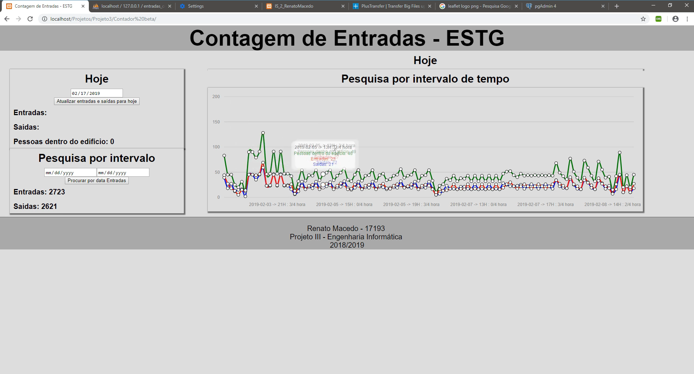

People counting with camera
This project aims to create a functional structure for counting the entries, exits and number of persons inside the building of ESTG.


Develop a program that identifies, from a media source, if a person is entering or exiting the building.
- The program must insert in a database all entries and exits, as well as the number of persons inside the building.
Develop a web page that access the database and shows the number of entries, exits, and persons inside the building for the current day, as well for a user selected time interval..
-The data must be shown in a graph chart by time.
Technologies
- OpenCV,
NumPy,
Python,
PHP,
MySQL,
JavaScript,
HTML,
CSS